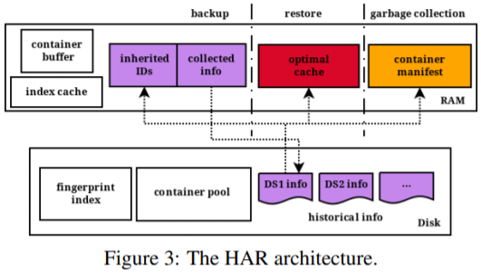

The identification of valid chunks is cumbersome and the merging operation is the most time-consuming phase in garbage collection.
identify valid chunks and the containers holding only a few valid chunks.
Merging operation: copy the valid chunks in the identified containers to new containers, then the identified containers are reclaimed.
most time-consuming phase in garbage collection.
Most of current approaches rewrite chunks belong to out-of-order containers, which limit their gains in restore performance and garbage collection efficiency.
Observation
reducing sparse containers is important to address the fragmentation problem.
two consecutive backups are very similar, and thus historical information collected during the backup is very useful to improve the next backup.
Method name
Fragmentation Classificationfragmentation come in two categories:
sparse containersout-of-order containers
Sparse containersit defines container utilization for a backup as the fraction of its chunks referenced by the backup.
define a threshold, if the utilization is smaller than the predefined threshold, regard it as a sparse container.reduce sparse containers can improve the restore performance.
Out-of-order containerA container is accessed many times intermittently during a restore, it considers it as an out-of-order container for the restore.
cause by the self-referred chunk.reduce the restore performance if the cache size is smaller that the cache thresholdhave no negative impact on garbage collection
Key questionHow to reduce sparse containers becomes the key problem.
Observation: sparse containers of the backup remain sparse in the next backup.
System architecture

Use a data structure to track all containers:
(container's ID, current utilization, pointer)
History-aware rewriting algorithmIdea: rewrites all duplicate chunks in the inherited sparse containers.The effect depends on how many backups it needs to retain?
Collect access pattern information during the backup
since the sequence of reading chunks during the restore is just the same as the sequence of writing them during a backup.record the container ID
Container-Marker AlgorithmHAR naturally accelerates expirations of sparse containers and thus the merging is no longer necessary.
For each container, CMA maintains a dataset list that records IDs of the datasets referring to the container.If a container's list is empty, the container can be reclaimed.
Implementation and Evaluation
Dataset:
VMDK, Linux, synthetic dataset
Metric
average utilization
deduplication ratio: outperform CBR and CAP in terms of backup performance.